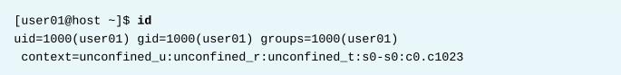
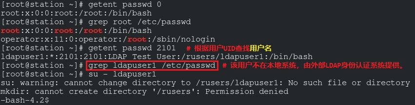

第六章 管理本地用户和组
目标：
- 创建、管理和删除本地用户和组，并且管理本地密码策略。
章节：
- 描述用户和组概念
- 获取超级用户访问权限
- 管理本地用户账号
- 管理本地组账号
- 管理用户密码
第一节：描述用户和组概念
目标：
- 完成本节后，学生应该能描述Linux系统上用户和组的用途。
什么是用户?
- 用户账户为不同人员和运行的程序之间提供安全边界。
- 用户使用用户名（username）进行标识，操作系统为其分配唯一标识号（UID），用户可能含有密码。
- 系统中的每个程序都以一个特定用户运行，即系统用户。
- 每个文件都有一个特定用户作为所有者用户账户
- 用户的三种主要类型：
1. 超级用户（superuser）：root用户，UID=0，具有系统的最高权限。
2. 系统用户（system user）：用于系统管理，如运行服务与守护进程等，不需要用于系统登录。
3. 普通用户（regular user）： 供用户进行日常系统管理，通常具有权限限制。
- id命令：查看当前登录的用户或指定的用户信息


* 注意：
1. 用户可存在于本地操作系统，也可由统一管理用户的外部身份认证系统提供。
2. 可根据用户UID反向查看对应的用户名，并且由外部身份认证系统提供的用户，其用户名
不在/etc/passwd中显示！
3. $ getent passwd <uid>：根据UID反向查找相应的用户名

- ls -l命令查看文件所属用户，ls -ld命令查看目录所属用户。

- ps命令：查看进程的信息
-a选项显示当前终端的进程，-u选项显示进程关联的用户信息。

- 虽然命令中显示用户名，但是系统中使用UID追踪用户。
- /etc/passwd用户数据库文件定义用户名和UID的关联关系。

什么是组?
- 组是用户的集合，组中用户共享文件和其他系统资源的访问权限。
- 组有组名（group name）和GID，匹配关系保存在/etc/group文件中。

主要组（primary groups）与补充组（supplementary groups）：
- 每个用户只属于一个主要组，对应的GID在/etc/passwd中。
- 创建新用户时同时创建同名的主要组，用户作为此组的唯一用户。
- 用户还可以属于补充组（或称次要组），对应GID在/etc/group中。
- 同一组中的不同用户拥有组对文件的相同权限。
- id命令可以显示用户的组信息，如下所示：

练习 P165：DESCRIBING USER AND GROUP CONCEPTS
第二节：获取超级用户访问权限
目标：
- 完成本节后，学生应该能切换超级用户账户管理Linux系统，并且通过sudo命令授予
其他用户超级用户访问权限。
超级用户：
- RHEL中的超级用户为root，具备最高权限（也有最高的破坏力）。
- 只有root用户才能进行软件安装删除、系统文件管理、用户管理等任务。
- 普通用户可以管理移动存储，root用户才能管理固定硬盘。
- Red Hat建议管理员以普通用户身份登录，有需要时再切换到root用户。
切换用户：
- su命令：用于进行用户切换
- 普通用户之间切换需要输入密码，root切换到普通用户不需要输入密码。

- su启动非登录shell（non-login shell），使用原始用户的环境设置。

- su - 启动登录shell（login shell），导入该用户的环境设置（推荐）。

使用SUDO运行命令：
- 普通用户使用sudo可以获取root用户的访问权限。
- sudo需要用户输入普通用户自己的密码以进行身份验证。

- 通过sudo运行的命令，会在/var/log/secure中记录日志。

- 在RHEL 7和RHEL 8中，属于wheel组的用户，可以运行sudo提权为root用户。
- RHEL 6中属于wheel组的用户无法使用sudo提权为root用户。
使用Sudo获取交互式Root Shell：
- 使用su命令切换至root用户需要root密码，存在安全风险，因此可使用sudo命令提权至root用户
而无需root密码。
- $ sudo su -：使具有sudo权限的普通用户获得root shell，需输入自身密码，而不需输入root密码。
- $ sudo -i：将普通用户切换到root shell

* 注意：
1. sudo su - 和 sudo -i 略有不同。
2. sudo su - 将完全切换至root用户的环境变量，而sudo -i的环境变量可能会不同。

配置Sudo：
- sudo的主配置文件是/etc/sudoers，建议采用visudo命令进行编辑。
- /etc/sudoers配置示例：
1. %wheel：指定用户组wheel
2. ALL=(ALL)：定义可以在任意主机上的对应命令，wheel可以运行任意命令。
3. ALL：wheel可以任意用户身份运行此命令

- /etc/sudoers.d目录也可以存放配置文件
- 如下所示：/etc/sudoers.d/user01（此方法需要交互输入普通用户密码）

- 使用如下方法不输入普通用户密码运行sudo命令：在ansible中非常有用

* 注意：
1. 使用SSH登录云实例（instance）时，需指定特定用户的私钥来登录，再使用sudo
提权至root用户。
练习 P174：GAINING SUPERUSER ACCESS
第三节：管理本地用户账号
目标：
- 完成本节后，学生应该能创建、修改与删除本地用户账号。
创建用户：
- $ useradd <username>：创建新用户及其主要组，并创建用户默认家目录和用户信息。
- $ useradd --help：查看useradd命令的选项和参数
- /etc/login.defs中定义新用户的UID范围和密码生命周期等。
- 更改该文件中的指定值不影响当前已存在的用户，只影响新创建的用户！

* 注意：/etc/skel目录中包含用户默认环境变量脚本文件
修改已存在的用户：
- $ usermod --help：查看usermod命令的选项与参数
- 如下所示：


* 注意：
1. 影子用户：具有相同UID，但用户名不同的用户。
2. 使用影子用户后，两个不同用户名的用户具有相同的UID，即使删除其中一个用户后
另一用户依然不受影响。
3. 但删除影子用户时，不要使用 -r 选项，否则将删除用户家目录的所有数据！
4. Red Hat操作系统中可使用影子账户，SUSE操作系统中无法使用影子账户。

删除用户：
- $ userdel <username>：从/etc/passwd文件中删除普通用户，但保留该用户家目录与邮件文件。
- $ userdel -r <username>：从/etc/passwd文件中删除普通用户，同时删除该用户家目录与邮件文件。
- 用户的邮件文件：/var/spool/mail/<username>
- 如果在未指定-r选项的情况下使用userdel删除某一用户，系统将具有未分配UID所拥有的⽂件，
这些文件的所有者为已删除的用户。
- 当由已删除用户拥有的⽂件在该用户的主目录之外存在时，也会发⽣这种情况。
- 这种情况将导致信息泄露和其他安全问题。
- 在RHEL 7和RHEL 8 中，useradd命令为新用户分配第一个大于或等于1000的可用UID，
除非通过-u选项明确指定UID。
- 以上为信息泄露产生的原因。
- 如果第一个可用UID先前被分配给了一个从系统中删除的用户账户，那么旧用户的UID将被重新
分配给新用户，以便为新用户提供旧用户剩余文件的所有权。

- $ find / -nouser -o -nogroup：查找无所有者的文件与目录
设置密码：
- $ passwd <username>：初始化或更改用户现有密码
- root用户可以为任何用户设置密码，普通用户只可以修改自己的密码。
- 若更改的密码过于简单或基于Linux字典，设置时将显示安全提示。

- 普通用户必须选择长度至少为8个字符，并且还不以字典词语、用户名或上一密码为基础的密码。
UID范围：
- UID 0永远分配给root用户
- UID 1-200分配给system users（红帽的系统服务）
- UID 201-999分配给system users，供文件系统中没有自己的文件的系统进程使用。
通常在安装需要它们的软件时，从可用池中动态分配它们。
程序以这些“无特权”系统用户身份运行，它们仅访问运行所需的资源。
- UID 1000+（包含1000）分配给普通用户
* 注意：RHEL 7之前，UID 1-499分配给系统用户，UID 500+分配给普通用户。
练习 P182：MANAGING LOCAL USER ACCOUNTS
第四节：管理本地组账号
目标：
- 完成本节后，学生应该能创建、修改与删除本地组账号。
创建组：
- groupadd命令创建用户组
- $ groupadd -g <GID> <groupname>：指定GID创建组，建议使用1000以上的GID。

- $ groupadd -r <groupname>：创建系统用户组

修改已存在的组：
- $ groupmod -n <new_groupname> <old_goupname>：更改用户组名称
- $ groupmod -g <GID> <groupname>：指定或更改用户组GID
删除组：
- $ groupdel <groupname>：删除用户组

更改组成员：
- $ usermod -g <GID> <username>：更改用户的主要组（primary group）

- $ usermod -aG <groupname> <username>：将用户添加至次要组

- 使⽤-a选项可使usermod命令处于append模式。
- 如果没有-a选项，就会从当前未包含在-G选项列表中的任何次要组中删除该用户。

练习 P188：MANAGING LOCAL GROUP ACCOUNTS
第五章：管理用户密码
目标：
- 完成本节后，学生应该能为用户设置密码管理策略，并且手动锁定与解锁用户账号。
影子密码与密码策略：
- 以前密码保存在/etc/passwd文件中，所有用户皆可读。
- 之后将密码保存到只有root用户可读的/etc/shadow文件中，文件格式如下所示：

1. 此密码所属账户的用户名
2. 此用户的加密密码
3. 上次更改密码的日期（-d）：设置值为自1970-01-01起的天数，并按UTC时区计算。
4. 密码最小生命周期（-m）：从上次更改密码到这次更改密码的间隔天数。
5. 密码最大生命周期（-M）：
密码过期时间，即在密码过期之前不进行密码更改可以经过的最长天数。
空字段表示它不会根据上次更改以来的时间失效。
6. 警告期（-W）：当用户在密码过期日之前登录达到该天数时，会收到有关密码过期的警告。
7. 非活动期（-I）：一旦密码过期，在这些天内仍可以接受登录，过了这一时期后，账户将被锁定。
8. 用户账号过期日期（-E）：
设置值为自1970-01-01起的天数，并按UTC时区计算。
空字段表示它不会在特定的日期失效。
* 注意：并非教材上所说的密码过期日期！
9. 最后一个字段通常为空，预留给将来使用。
- $ date -d "1970-01-01 UTC <number> day"：UTC时区1970年1月1日日期转换
加密密码格式：
- 加密的密码包含三部分信息：哈希算法、salt、加密后的密码哈希。
- 每部分信息使用 $ 分隔。

1. 哈希算法：6表示SHA-512哈希算法，这是RHEL 8中的默认算法。
1表示MD5哈希算法，5表示SHA-256哈希算法。
2. salt：用于加密密码
3. 用户密码的加密哈希值。
salt和未加密密码组合并加密，⽣成加密的密码哈希。
- salt可以防止两个密码相同的用户在/etc/shadow文件中拥有相同的条目。
密码验证：
- 用户登录时，结合salt与用户输入的未加密密码，使用指定的哈希算法（SHA-512）
进行加密，生成的加密密码哈希与/etc/shadow中相应的用户条目（entry）进行比对。
配置密码生命生命周期：
- 密码生命周期示意图：

- chage命令用于修改密码生命周期

- $ chage -m 0 -M 90 -W 7 -I 15 <username>
# 注意：密码过期日期与用户账号过期日期不同！

- $ chage -d 0 <username>：强制用户下次登录时更改密码

- $ chage -l <username>：查看用户密码生命周期详细信息
- $ chage -E 2019-08-05 <username>：设置用户账号的过期日期
限制访问：
- $ usermod -L <username>：锁定用户账号

* 注意：SSH客户端用户无法登录，可能该用户已被锁定！
- $ usermod -U <username>：解锁用户账号
- $ usermod -L -e 2019-01-05 <username>：锁定用户账号并设置用户账号过期时间

nologin Shell：
- nologin shell用作不打算以交互⽅式登录系统的用户账户的替代shell。
- 从安全角度来看，如果用户账户担当的职责不需要用户登录系统，则禁止用户账户登录系统。
如系统服务账号，并不需要登录操作系统。
- 这种情况的常用解决⽅案是将用户的登录shell设为/sbin/nologin。
- 如果用户试图直接登录系统，nologin shell将关闭该连接。

练习 P195：MANAGING USER PASSWORDS
Lab P199：MANAGING LOCAL USERS AND GROUPS